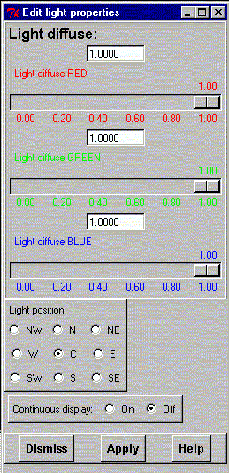

**************************************************************************
Edit light properties widget
Leif Laaksonen CSC 1998
**************************************************************************
Edit properties of the light (colour components) and the position of the light.
It is possible to the change the red, green and blue colour intensity of the light using the colour sliders.
The position of the light is by default along the z-axis but it can be changed according to the north, north east, east, south east, south, south west, west and north west scheme. Select the new light position by clicking the radio button.
To update the display while changing the value click the "Instant update" button.

Line command: see define command
**************************************************************************
LUL/1998
**************************************************************************